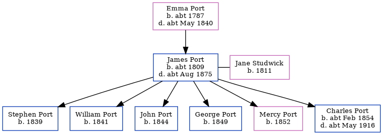

James Port c1809 - c1875
[ Home ] | [ Calendar ] | [ Surnames Index ] | [ Errors ] | [ Family History ]A barber and the child of Emma Port, James Port, the first cousin four-times-removed on the mother's side of Nigel Horne, was born in Herne, Kent, England c. 18091,2,3,4, was baptised there at St Martin on 23 Apr 1809 and married Jane Studwick (a laundress with whom he had 6 children: Stephen, William, John S, George A, Mercy Ann and Charles Randle) at St Mary Northgate, Canterbury, Kent, England on 19 Feb 18335.
During his life, he was living at Herne Street in Herne on 6 Jun 18411 and on 30 Mar 18512; and at Sturry Street, Sturry, Kent on 7 Apr 18617.
He died c. Aug 1875 in Blean, Kent, England3 and was buried at St Nicholas, Sturry, Kent on 23 Sept 18756.
Parents
- Emma was born c. 1787
Children
- Stephen was born in 1839
- William was born in 1841
- John S was born in 1844
- George A was born in 1849
- Mercy Ann was born in 1852
- Charles Randle was born c. Feb 1854
Citations
- 1841 England, Wales & Scotland Census - Findmypast (was age 32 and the head of the household)
- 1851 England, Wales & Scotland Census - Findmypast (was age 42 and the head of the household)
- England & Wales deaths 1837-2007 - Findmypast
- Kent Burials - Findmypast
- Kent Marriages And Banns - Findmypast
- Kent Burials - Findmypast
- 1861 England, Wales & Scotland Census - Findmypast (was age 52 and the head of the household)
Media
Kent Burials - GBPRS/CANT/D/95217698
England & Wales deaths 1837-2007 - BMD/D/1875/3/AZ/000262/117
England Births & Baptisms 1538-1975 - R_882990455
Kent Baptisms - GBPRS/CANT/B/96124574
1841 England, Wales & Scotland Census - GBC/1841/0013937055
1851 England, Wales & Scotland Census - GBC/1851/0005821724
1861 England, Wales & Scotland Census - GBC/1861/0003445326
Kent marriages and banns - GBPRS/CANT/M/94083113/1
Family Tree
Map
Generated by ged2site. Last updated on Jul 3, 2024